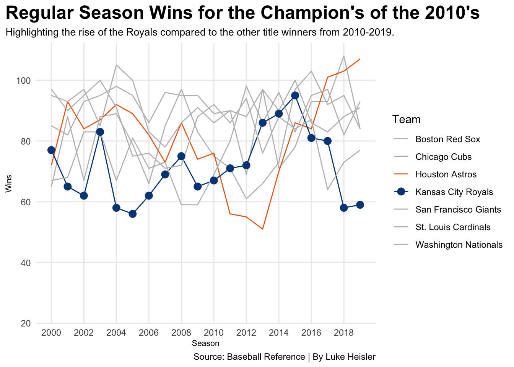
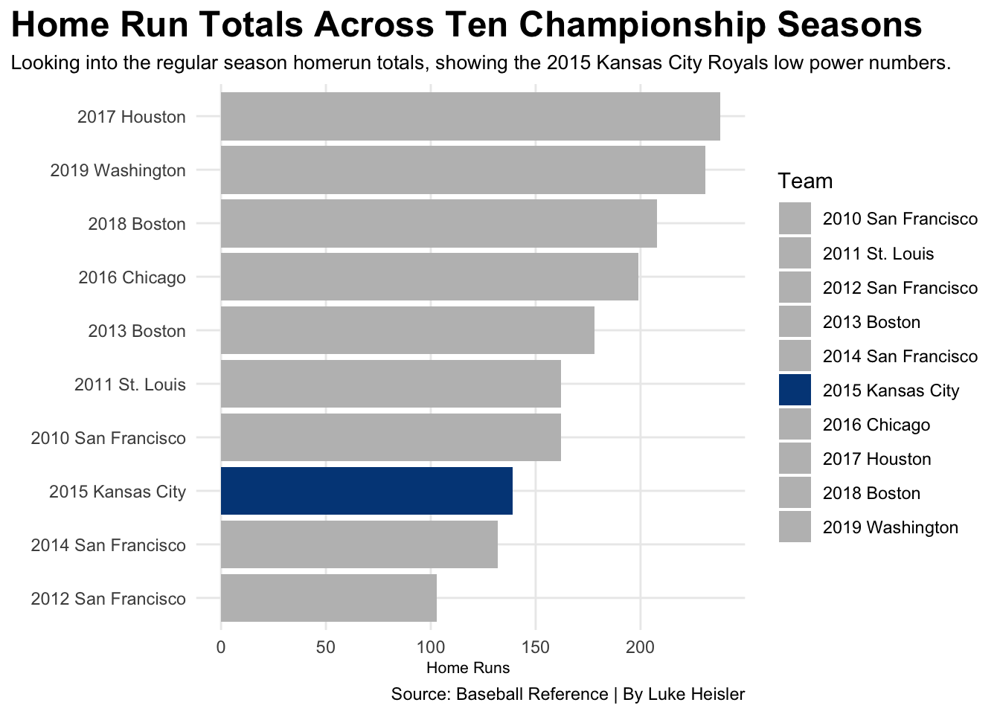
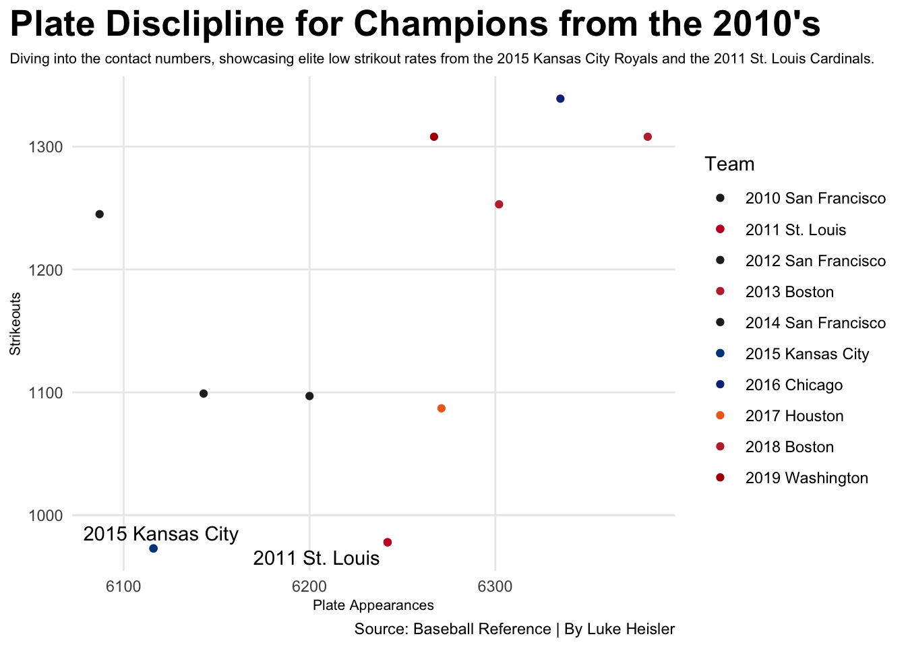

To many, the 2015 Kansas City Royals were an anomaly. The Royals went against every trend in the Statcast era of baseball. Many of these trends included the rise of the long ball and power over contact. Kansas City went the opposite direction, prioritizing small ball, whether that be stealing bases, focusing on defense over offense, and a shutdown bullpen. Looking at the champions from 2010-2019 will really reveal if the 2015 Royals were in fact an anomaly in the league.
Code
library(tidyverse)library(dplyr)library(ggrepel)royals_2015 <-read_csv("2015_royals.csv")royals_history <-read_csv("royals_history.csv")giants_history <-read_csv("giants_history.csv")giants_2010 <-read_csv("2010_giants.csv")giants_2012 <-read_csv("2012_giants.csv")giants_2014 <-read_csv("2014_giants.csv")cardinals_history <-read_csv("cardinals_history.csv")cardinals_2011 <-read_csv("2011_cardinals.csv")redsox_history <-read_csv("redsox_history.csv")redsox_2013 <-read_csv("2013_redsox.csv")redsox_2018 <-read_csv("2018_redsox.csv")cubs_history <-read_csv("cubs_history.csv")cubs_2016 <-read_csv("2016_cubs.csv")astros_history <-read_csv("astros_history.csv")astros_2017 <-read_csv("2017_astros.csv")nationals_history <-read_csv("nationals_history.csv")nationals_2019 <-read_csv("2019_nationals.csv")wins_over_time <-bind_rows( royals_history |>mutate(Tm ="Kansas City Royals"), redsox_history |>mutate(Tm ="Boston Red Sox"), giants_history |>mutate(Tm ="San Francisco Giants"), nationals_history |>mutate(Tm ="Washington Nationals"), astros_history |>mutate(Tm ="Houston Astros"), cubs_history |>mutate(Tm ="Chicago Cubs"), cardinals_history |>mutate(Tm ="St. Louis Cardinals")) |>filter(Year >=2000)royalsgraph1 <- royals_history |>filter(Year >1999)ggplot() +geom_line(data = wins_over_time, aes(x = Year, y = W, color = Tm, group = Tm)) +geom_point(data = royalsgraph1, aes(x = Year, y = W, color = Tm), size =3) +scale_x_continuous(breaks =seq(2000,20219, by =2),limits =c(2000,2019)) +scale_color_manual(values =c("Kansas City Royals"="#004687","Boston Red Sox"="grey","Chicago Cubs"="grey","Houston Astros"="#EB6E1F","Washington Nationals"="grey","San Francisco Giants"="grey","St. Louis Cardinals"="grey" )) +labs(title ="Regular Season Wins for the Champion's of the 2010's",subtitle ="Highlighting the rise of the Royals compared to the other title winners from 2010-2019.",caption ="Source: Baseball Reference | By Luke Heisler",x ="Season",y ="Wins",color ="Team" ) +theme_minimal() +theme(plot.title =element_text(size =18, face ="bold"),axis.title =element_text(size =8), plot.subtitle =element_text(size=10), panel.grid.minor =element_blank(),plot.title.position ="plot" )

Diving into the win total from the 2000-2019 seasons for each World Series champion will show how the Royals weren’t just defying league odds but their own franchise history. The Royals had only won one championship since their first season; that was in 1985. In the following 28 years, there was not a lot of winning. That was until 2014, when the Royals fought through the American League to earn a spot in the World Series against the San Francisco Giants. In a season where they won 89 regular-season games, they fell one short, losing to the Giants in Game 7. In 2015, the Royals finally broke through, beating the New York Mets in Game 5 of the World Series. In the regular season, Kansas City won 95 games, the highest win total since 1980.
The only team to have a lower win total in a season between 2000 and 2019 from the World Series champions was the Houston Astros. In 2013, the Astros won just 51 games, seven fewer than any Royals team in that time. Similar to the Royals, they shot up in the win column, going from bottom of the barrel to a World Series ring in 2017. In 2017, the Astros won 101 games; a steady climb between 2013 and 2017 brought them to the top.
Code
royals_ws <- royals_2015 |>mutate(Team ="2015 Kansas City")cardinals_ws <- cardinals_2011 |>mutate(Team ="2011 St. Louis")giants_ws10 <- giants_2010 |>mutate(Team ="2010 San Francisco")giants_ws12 <- giants_2012 |>mutate(Team ="2012 San Francisco")giants_ws14 <- giants_2014 |>mutate(Team ="2014 San Francisco")redsox_ws13 <- redsox_2013 |>mutate(Team ="2013 Boston")redsox_ws18 <- redsox_2018 |>mutate(Team ="2018 Boston")cubs_ws <- cubs_2016 |>mutate(Team ="2016 Chicago")astros_ws <- astros_2017 |>mutate(Team ="2017 Houston")nationals_ws <- nationals_2019 |>mutate(Team ="2019 Washington")home_runs <-bind_rows( royals_ws, cardinals_ws, giants_ws10, giants_ws12, giants_ws14, redsox_ws13, redsox_ws18, cubs_ws, astros_ws, nationals_ws)total_hr <- home_runs |>filter(Player =="Team Totals") |>select(Team, HR)total_hr <- total_hr |>mutate(HR =case_when( Team =="2014 San Francisco"~132, Team =="2019 Washington"~231,TRUE~ HR ) )ggplot() +geom_bar(data = total_hr, aes(x =reorder(Team, HR), weight = HR, fill = Team)) +scale_fill_manual(values =c("2015 Kansas City"="#004687","2013 Boston"="grey","2016 Chicago"="grey","2017 Houston"="grey","2019 Washington"="grey","2010 San Francisco"="grey","2011 St. Louis"="grey","2012 San Francisco"="grey","2014 San Francisco"="grey","2018 Boston"="grey" )) +labs(title ="Home Run Totals Across Ten Championship Seasons",subtitle ="Looking into the regular season homerun totals, showing the 2015 Kansas City Royals low power numbers.",caption ="Source: Baseball Reference | By Luke Heisler",x ="",y ="Home Runs " ) +coord_flip() +theme_minimal() +theme(plot.title =element_text(size =18, face ="bold"),axis.title =element_text(size =8), plot.subtitle =element_text(size=10), panel.grid.minor =element_blank(),plot.title.position ="plot" )

In the “new” era of baseball, the home run has been a major statistic. New technology has allowed teams to revolutionize the game. The majority of the teams in Major League Baseball started looking into launch angle and bat speed around the 2015 season. The Kansas City Royals shied away from it. Sticking to their small-ball ideology allowed the Royals to win in 2015.
In the 2015 regular season, the Royals hit 139 home runs. Only two championship teams from the 2010s hit fewer than the Royals during their respective championship runs. The 2014 San Francisco Giants hit 132, while the 2012 San Francisco Giants hit 103 in the regular season. These are the three teams that go against the modern trends of the long ball. The other seven teams to win in that time frame all hit above 150 home runs; the most in a regular season was by the 2017 Houston Astros, who hit 238 home runs.
Code
SOP <-bind_rows( royals_ws, cardinals_ws, giants_ws10, giants_ws12, giants_ws14, redsox_ws13, redsox_ws18, cubs_ws, astros_ws, nationals_ws)total_SOP <- SOP |>filter(Player =="Team Totals") |>select(Team, PA, SO)KCSTL <- total_SOP |>filter(Team =="2015 Kansas City"| Team =="2011 St. Louis")ggplot() +geom_point(data = total_SOP, aes(x = PA, y = SO, color = Team)) +geom_point(data = KCSTL, aes(x = PA, y = SO, color = Team)) +geom_text_repel(data = KCSTL,aes(x = PA, y = SO, label = Team) ) +scale_color_manual(values =c("2015 Kansas City"="#004687","2013 Boston"="#BD3039","2016 Chicago"="#0E3386","2017 Houston"="#EB6e1F","2019 Washington"="#AB0003","2010 San Francisco"="#27251F","2011 St. Louis"="#C70F2E","2012 San Francisco"="#27251F","2014 San Francisco"="#27251F","2018 Boston"="#BD3039" )) +labs(title ="Plate Disclipline for Champions from the 2010's",subtitle ="Diving into the contact numbers, showcasing elite low strikout rates from the 2015 Kansas City Royals and the 2011 St. Louis Cardinals.",caption ="Source: Baseball Reference | By Luke Heisler",x ="Plate Appearances",y ="Strikeouts" ) +theme_minimal() +theme(plot.title =element_text(size =20, face ="bold"),axis.title =element_text(size =8), plot.subtitle =element_text(size=8), panel.grid.minor =element_blank(),plot.title.position ="plot" )

Instead of going for the long ball, the Royals focused on putting the ball in play and not striking out. The main reason for this is that they were elite at bringing in runs when people were on base. Kansas City wasn’t the only team to prioritize putting the ball in play; the 2011 St. Louis Cardinals struck out just five more times than the Kansas City Royals. On the other end of the spectrum, the 2016 Cubs, 2019 Nationals, and 2013 Red Sox all struck out more than 1,300 times in the regular season. The Royals and the Cardinals both stayed below 1,000 in their respective seasons. This shows that elite plate discipline and contact rates can still win games in the new era of the long ball.
The data confirms that the 2015 Kansas City Royals were truly an anomaly in the new era of baseball and in their own franchise. A great season in 2015 has stood out against the low win totals that were both before and after the season. Kansas City stayed with their small-ball ideology, going away from the league norms such as the home run trend. While the rest of Major League Baseball followed the trends from new technology, the Royals carved their own path through elite contact rates, proving that they were still able to bring home a World Series championship.